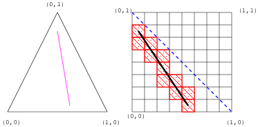

Next: Texel Modification
Up: Painting Surfaces
Previous: Brush Strokes
The rasterization of a stroke segment in a texture
map touches a set of texels called the stroke texels.
Figure ![[*]](file:/home/bfgorski/bin/share/lib/latex2html/icons/crossref.png) shows a single stroke segment in a triangle
and the corresponding stroke texels in the texture map.
The stroke segment is shown in physical and texture space along with the
mapping of texture coordinates from physical space to texture space.
The properties of a brush define how the stroke texels and the surrounding texels
are modified.
These are the properties of a brush:
shows a single stroke segment in a triangle
and the corresponding stroke texels in the texture map.
The stroke segment is shown in physical and texture space along with the
mapping of texture coordinates from physical space to texture space.
The properties of a brush define how the stroke texels and the surrounding texels
are modified.
These are the properties of a brush:
- Shape and size.
The shape and size of a brush define which surrounding texels are modified.
The size of a brush is given in physical space, and is described by a bounding sphere.
All texels that lie within this bounding sphere can be modified by the brush.
The shape of the brush determines which texels within its bounding sphere
are modified.
A circular brush, for example, selects which texels are modified based on the distance
between the center of the texel and the center of the corresponding stroke texel.
- Color function. The color function defines the color
of the brush at a particular position within its extent, i.e., the volume of space
defined by its size and shape.
The color function can be a basic function, such as a checker or stripe pattern,
or a more complex function such as procedural marble or wood.
- Blend function. The blend function defines
how the brush attributes, as defined by the color function, are
combined with the existing texel. The blend function
can either replace the existing texel attributes or blend them
with the brush attributes.
Brushes modify the diffuse color of the surface, represented by an RGBA tuple.
It is also possible to use the brushes to paint different material properties,
such as specular highlights and bump map information, onto the surface.
Interactive rendering can be achieved by using multi-texturing
and normal mapping to render the surface.
Figure:
Brush stroke and stroke texels
|

|
Next: Texel Modification
Up: Painting Surfaces
Previous: Brush Strokes
servant of allah
2010-11-10